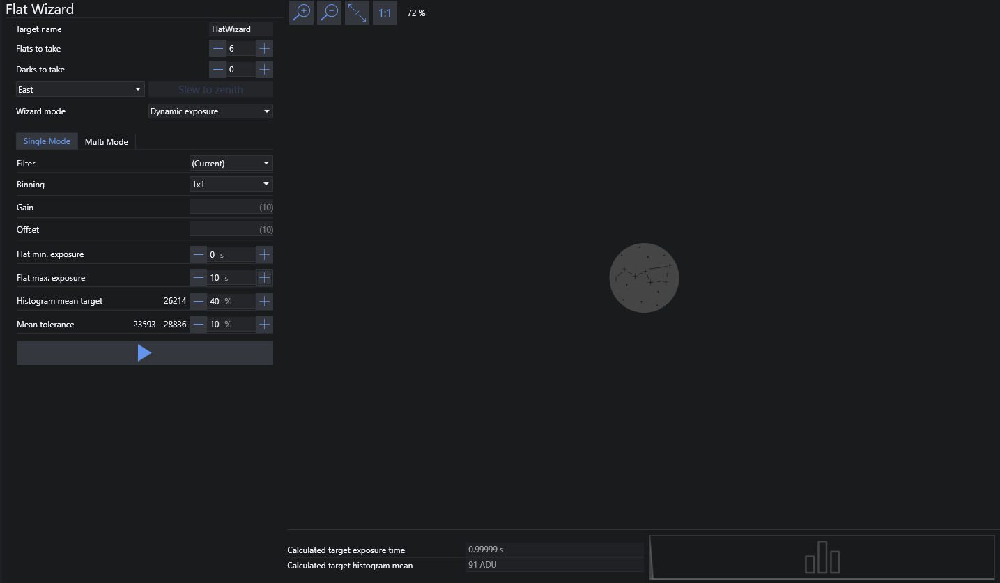
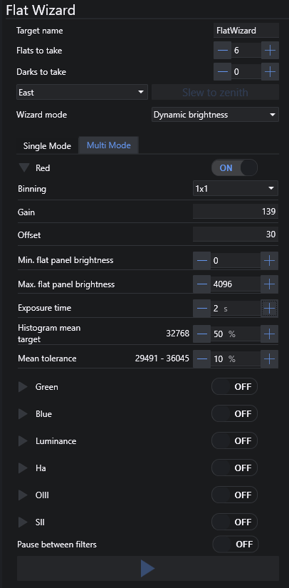

Flat Wizard
The Flat Wizard offers the possibility to automate flat image capture. It takes multiple exposures until it finds an optimal exposure time for the settings specified. There is also Multi Mode. Multi Mode automates flat acquisition for each filter for users with electronic filter wheels.
Flat Wizard takes 3 test exposures and attempts to calculate the optimal exposure time for a flat image by using linear extrapolation. Should that not be sufficient to derive a suitable exposure time, it will continue to take test exposures until it can determine the optimal exposure time or will ask to adjust the parameters when it fails to find one.

Settings#
Target Name#
You can manually specify a name in this field and that name will then be used to populate the image file pattern $$TARGETNAME$$ for the FLAT and DARK frames
Flats to take#
The number of flats to take for each filter
Darks to take#
The number of darks to take for each exposure time
Note
Taking darks is not available for "Sky Flats" mode, as the exposure time for flats in this mode varies between each frame
Slew To Zenith#
Depending on the selected value inside the combobox next to the button the telescope will slew to zenith with pier side east or west
Wizard Mode#
This mode will switch the operational behavior for the flat wizard for different scenarios
- Dynamic Exposure
- In this mode the flat wizard will try to find an exposure time (for a fixed panel brightness if a flat panel is connected)
- The algorithm will start with an exposure time of
((Max Exposure Time + Min Exposure Time) / 2)- If the exposure is too bright the algorithm will use this exposure time as the new maximum and repeat
- If the exposure is too dim the algorithm will use this exposure time as the new minimum and repeat
- Dynamic Brightness
- For a fixed exposure time the flat wizard will try to find a flat panel brightness to match the desired exposure time. This requires a controllable flat panel to be connected.
- The algorithm will start with an exposure time of
((Max Panel Brightness + Min Panel Brightness) / 2)- If the exposure is too bright the algorithm will use this panel brightness as the new maximum and repeat
- If the exposure is too dim the algorithm will use this panel brightness as the new minimum and repeat
- Sky Flats
- A mode when no flat panel is available, but rather the sky at dusk or dawn should be used to take flat exposures. During the runtime of the flat wizard the exposure time will be constantly adjusted for the changing sky brightness, so the exposures will all have a different exposure time
- The algorithm will start with an exposure time of
((Max Exposure Time + Min Exposure Time) / 2)- If the exposure is too bright the algorithm will use this exposure time as the new maximum and repeat
- If the exposure is too dim the algorithm will use this exposure time as the new minimum and repeat
- Once an exposure time is found it will calculate the sky flux change between the exposures and adjust the time for the new exposure accordingly. If the new exposure is not within tolerance, the process repeats again by finding an initial exposure time again.
Single Mode#
Filter#
- If a filter wheel is connected, a filter can be chosen for single mode
Binning#
- Sets camera binning level for the exposures
Gain#
- Sets the gain of the camera to use for the exposures. The camera and driver needs to support gain control
Offset#
- Sets the offset of the camera to use for the exposures. The camera and driver needs to support offset control
Flat Min Exposure / Min. flat panel brightness#
- The minimum exposure time Flat Wizard should use or the minimum flat panel brightness (depending on the selected mode)
Flat Max Exposure / Max. flat panel brightness#
- The maximum exposure time Flat Wizard should use or the maximum flat panel brightness (depending on the selected mode)
Histogram Mean Target#
- Sets the mean ADU that the flat image histogram should use.
- A percentage can be specified on the right or with using the slider. The number left of the percentage displays the ADU value of the desired percentage
Mean Tolerance#
- Determines how large the tolerance of the flat mean from the mean target (12) should be
- A percentage can be specified on the right or with using the slider. The number left of the percentage displays the ADU range of the desired tolerance percentage based on the mean target (12). A tolerance value of 20-30% should be typical
Start Flat Wizard#
- This button starts the flat acquisition process using the current settings
- First, Flat Wizard will calculate the optimal exposure time using test exposures, and then take flat the full course of flats as set in (2). You will be prompted to extinguish any light source prior to taking Darks.
Image Preview#
- On the right side the most recent flat image is displayed in this area while determining the optimal flat exposure time. Note that this area will not be updated once the optimal exposure time is determined. This is to speed up the flat acquisition process.
Calculated Target Exposure Time#
- Once Flat Wizard determines the necessary exposure time, it will use that to take all flats
Calculated Target Histogram Mean#
- Once Flat Wizard determines the necessary exposure time and resulting ADU, the ADU mean will be displayed here
Multi Mode#

In essence, Multi Mode works just like Single Mode, but for multiple filters. The majority of controls are identical to Single Mode.
In Multi Mode, Flat Wizard settings are saved on a per-filter basis and do not transfer to Single Mode.
Filter Toggle#
- Enables a specific filter for flat capture
Filter List#
- Displays all available filters by name and can be expanded by clicking the > icon